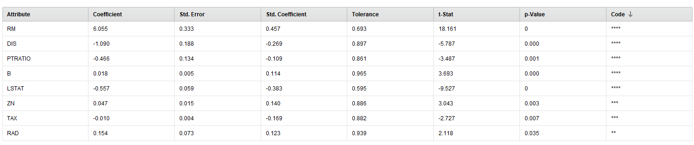

Predicción de precios de viviendas en Boston
Datos utilizados: data set precios viviendas
El presente proyecto busca entrenar un modelo para predecir la variable dependiente Y=precios de vivienda en los suburbios de la ciudad de Boston, Massachusetts, Estados Unidos
partiendo de una serie de variables independientes (X) vinculadas a la vivienda sí misma y a variables del entorno.
Como es de esperar los precios de las casas están condicionados por múltiples factores, la localidad de la cual se trate, así como superficie y cercanía (o lejanía) a diferentes puntos emblemáticos de una ciudad.
Para tal fin utilizaremos el data set de UCI - housing.
Pasaremos al análisis de los datos, para su mejor comprensión, observamos las variables independientes del data set y su significado:
Nombre |
Significado |
Tipo de dato |
Rangos |
|---|---|---|---|
| CRIM | Tasa de crimen per cápita según ciudad | numérica | 0 - 88,976 | ZN | Proporción de zona residencial divivida en lotes de más de 25 mil metros cuadrados | numérica | 0 - 100 | INDUS | Proporción de acres de negocios no minoristas por ciudad | numérica | 0,46 - 27,740 | CHAS | Limita con el río Charles (1 sí y 0 no) | categórica | toma valores 0 y 1 | NOX | Concentración de óxido nítrico (partes por 10 millones) | numérica | 0,385 - 0,871 | RM | Número promedio de habitaciones por vivienda | numérica | 3,561 - 8,780 | AGE | Proporción de unidades ocupadas por sus dueños construidas antes de 1940 | numérica | 2,9 - 100 | DIS | Distancia ponderada a 5 centros de empleo de Boston | Real- numérica | 1,130 - 12,127 | RAD | Índice de accesibilidad a autopistas radiales | numérica | 1 - 24 | TAX | Tasa de impuesto total a la propiedad cada $10.000 | numérica | 187 - 711 | PTRATIO | Ratio alumno/maestro por ciudad | numérica | 12,6 - 22,0 | B | 1000(Bk - 0.63)^2 donde Bk es la proporción de afrodescendientes por ciudad | numérica | 0,320 - 396,9 | LSTAT | Porcentaje de población de clase baja | Real- numérica | 1,73 - 37,97 |
La variable dependiente es MEDV, el valor promedio de las viviendas ocupadas por sus propietarios en miles de dólares.
Considerando que contamos con datos etiquetados que permiten entrenar una respuesta correcta, utilizaremos modelos supervisados, siendo el objetivo elaborar un modelo para poder predecir nueva información de la variable dependiente cuando tengamos nuevos datos de variables
independientes.
A su vez dado que la variable dependiente es un valor continuo estamos ante un problema de regresión y no de clasificación.
Al ser un problema de regresión utilizaremos la regresión lineal asegurándonos de remover el ruido y la colinealidad de las variables, así como de
normalizar los datos en caso de tener distribuciones muy dispares dado que así lo requiere el uso de este algoritmo.
Para esto analizaremos datos faltantes y outliers, el data set no tiene datos faltantes, salvo en la variable a predecir (4 casos)
En cuanto a los outliers para las variables que presentan una mayor desviación dentro de sus rangos ZN, AGE, TAX se observan las gráficas de dispersión:
Gráfica de dispersión de variable AGE
 Gráfica de dispersión de variable TAX
Gráfica de dispersión de variable TAX
 Gráfica de dispersión de variable ZN
Gráfica de dispersión de variable ZN
 En estas variables no se observan valores anormales, más allá de que algunos se sitúan en los extremos de la distribución conforman un grupo de varios puntos lo que
no indicaría que son datos erróneos u outliers.
En estas variables no se observan valores anormales, más allá de que algunos se sitúan en los extremos de la distribución conforman un grupo de varios puntos lo que
no indicaría que son datos erróneos u outliers.
Ahora nos centraremos en el estudio de la colinealidad de los atributos, en el caso de rapid miner, la herramienta incorpora en el modelo la remoción
de atributos correlacionados para evitar perjudicar la performance del modelo, pero igualmente es útil analizar la matriz de correlaciones para visualizar
dichas relaciones:

Al observar la matriz se ve que ciertos atributos tienen una correlacióon importante, los más correlacionados son representados
con colores violeta oscuro. Es posible observar que NOX muestra correlaciones altas con AGE (0.731) y DIS (-0.769) .
A su vez INDUS muestra correlaciones altas con NOX (0.764), con DIS (-0.708) y con TAX (0.721)
Pero también se observan de AGE e DIS (-0.748)
A su vez variables como INDUS y NOX muestran correlaciones con otras del modelo, por lo que son grandes candidatas a ser retiradas del mismo.
Por último los rangos de los atributos son disímiles entre sí, como podemos observar en la tabla de descripción de los atributos
desarrollada al inicio, esto indica que vamos a precisar estandarizar las distribuciones para lograr que todas las variables se muevan dentro de un rango
similar evitando otorgar mayor peso a aquellas variables con rangos mayores que quizás no sean tan relevantes para el modelo es por esto que se
recomienda normalizar los datos para trabajar con modelos sensibles a estas variaciones como la regresión lineal.
Dividiremos el data set en datos de entrenamiento y de test, para asegurar que el data set de entrenamiento sea representativo se aleatorizan
los datos con un nodo denominado Shuffle.Esto es para evitar que estén ordenados a la hora de seleccionar partes del data set para validación,
entrenamiento y test de forma de evitar trabajar con datos segmentados y no representativos de todo el universo.
Luego de aleatorizar los datos se dividirá el data set filtrando un 70% para datos de entrenamiento y un 30% para test como se observa en la siguiente imagen:

A los datos de entrenamiento les aplicamos un nodo de rapid miner utilizado para optimizar parámetros: Optimizer y obtenemos que los mínimos errores al cuadrado
se obtienen al usar T-Test como método de feature selection, con un alpha de 0.5 y sin usar sesgo.
En dicho caso la sumatoria de la raíz cuadrada de los errores a la media da 3.589, el valor más bajo obtenido.
A continuación se observa la salida obtenida por rapid miner de los primeras iteraciones ordenadas de menor a mayor por raíz cuadrada del error:

Como se puede observar todas dan el mismo error y utilizan el mismo método de feature selection variando cantidad de iteraciones y valor de alpha.
Por lo tanto se decide aplicar dicha selección en la regresión lineal.
Dentro del Validation del modelo de rapid miner aplico la normalización y el modelo de regresión lineal:

Aplicando el modelo y midiendo la performance para validación del entrenamiento a la salida.
Si se observa la salida de la regresión lineal sin dudas alguna se ve que de las variables analizadas son más significativas en
cuanto al modelo y su predicción como es posible osbervar en la siguiente imagen:

De acuerdo a la imagen (cuantos más asteriscos es más significativa la variable para el modelo) se obtiene que
RM: Número promedio de cuartos de la vivienda
DIS: Distancia ponderada a 5 centros de empleo de Boston
PTRATIO: Ratio alumno/maestro por ciudad
LSTAT: % de población de clase baja
Son las variables más significativas para el modelo, seguidas de:
ZN:Proporción de zona residencial con lotes sobre 25 mil metros cuadrados
TAX: Valor de impuestos de la vivienda cada $10.000
RAD: Índice de accesibilidad a autopistas radiales
La salida de la regresión lineal indica un resumen de los coeficientes obtenidos para cada variable independiente del modelo:

En la imagen se observa un coeficiente elevado para RM: Número promedio de cuartos de la vivienda, siendo el p valor 0 y el estadístico t elevado,
A su vez la variable independiente DIS: Distancia ponderada a 5 centros de empleo de Boston tiene un coeficiente negativo, lo que tiene sentido dado que
disminuiría el precio de la vivienda la mayor distancia a centros de empleo, algo similar aunque con menor peso ocurre
coon el % de población de clase baja en el vecindario (LSTAT) y PTRATIO: Ratio alumno/maestro por ciudad, dado que al haber más alumnos por maestro tampoco
se considera atractiva la zona para vivir pensando en familais con hijos.

Cuando evaluamos la performance del modelo para los datos de test se observa para el set de datos analizado que la correlación del modelo obtenida es de un 0,823 es decir, el 82,3% de la variación
de la variable dependiente Y=MEDV puede ser explicada por la variación de las variables indendientes utilizadas en el modelo.
A su vez también podemos medir el error de predicción ya que conocemos el valor real de salida, para tal fin creamos
la variable residuos, resta de la predicción con el valor real:

Se obtiene por tanto un valor de residuos mínimo de -18,864 y máximo de 12,268 con una media de 0,067 y una desviación de 4,637.
La siguiente gráfica indica cómo se distribuyen los residuos, siguiendo una distribución normal.